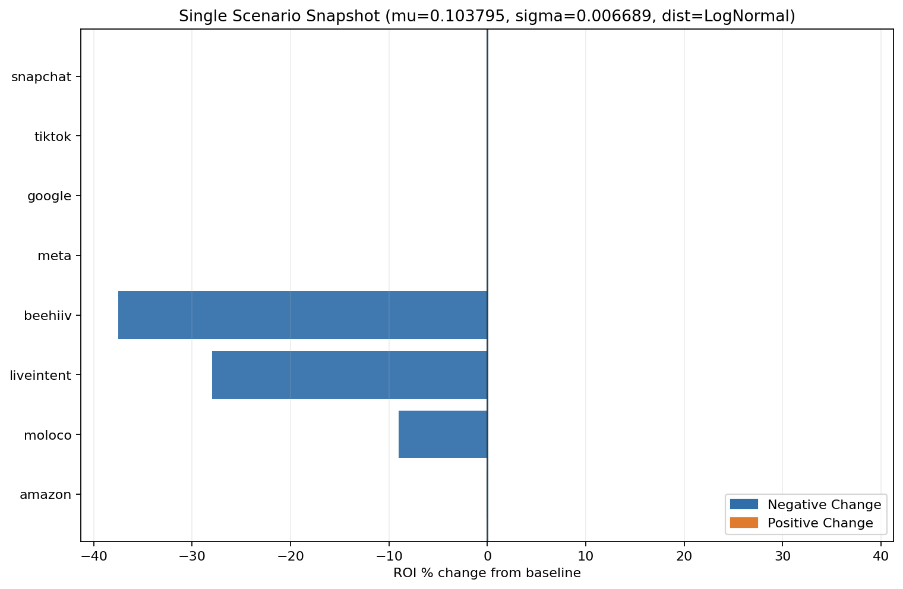
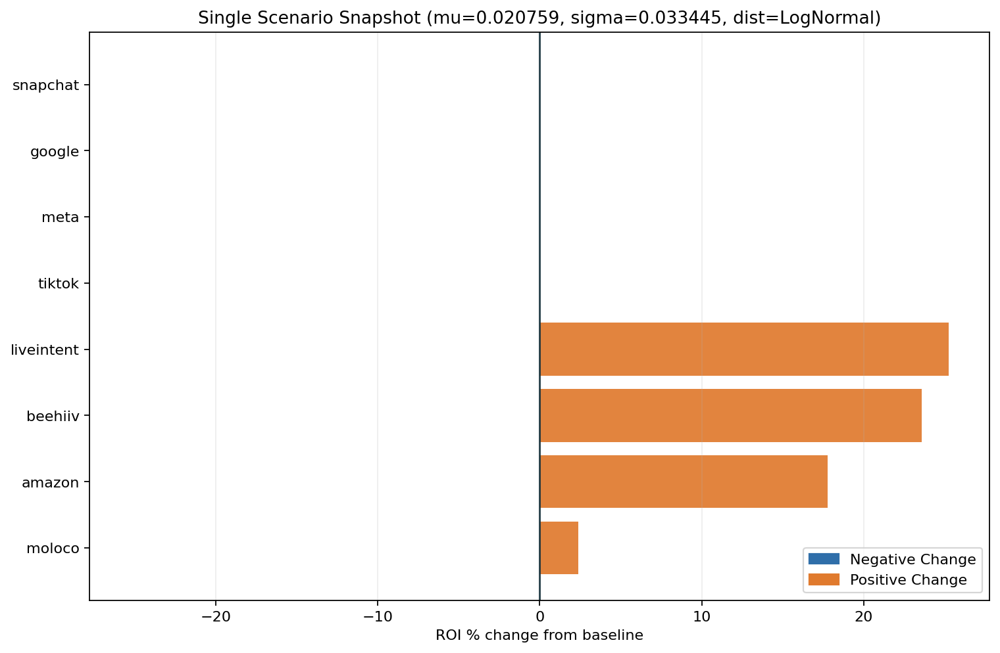
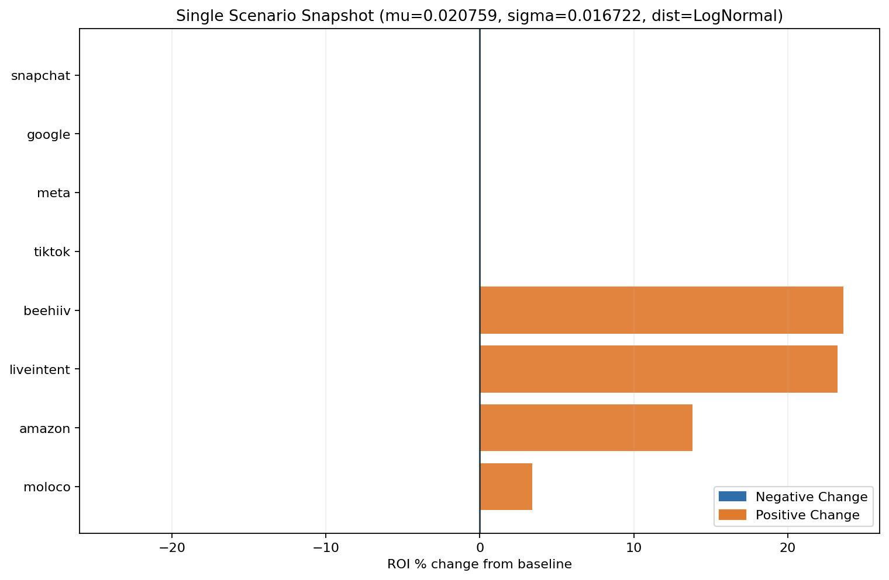
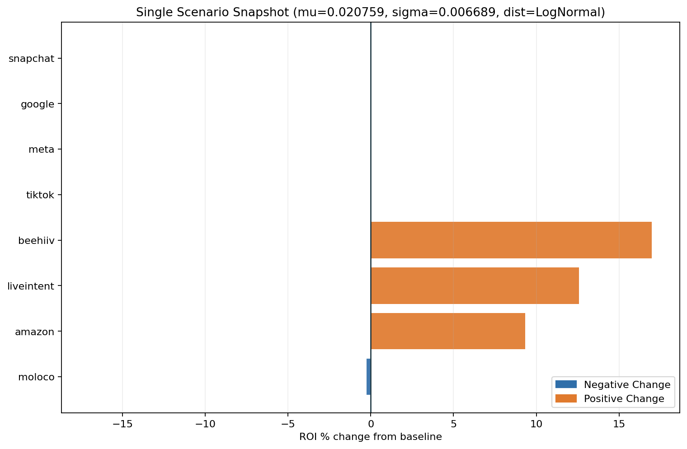
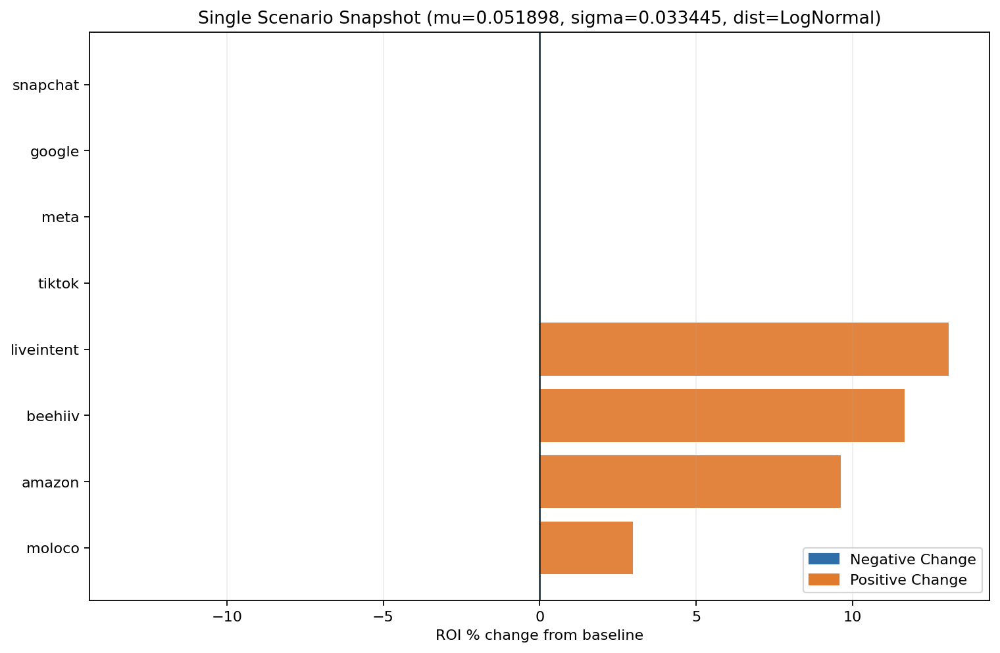

Step 1: Full Landscape
View the highest prior-sensitive channel pairs across all distributions to spot where model outputs move most.
 x
x
 UCSB x BlueAlpha AI
UCSB x BlueAlpha AI
Google Meridian MMM - Prior Robustness Diagnostics
The listed target channels were perturbed together in each run (linked prior changes). The report then measures ROI response for all modeled channels under those shared target priors.
Marketing Mix Models (MMM) are widely used by companies to evaluate the effectiveness of marketing channels and guide budget allocation decisions. Recent Bayesian MMM frameworks, such as Google Meridian, allow analysts to incorporate prior information into model estimation.
However, Bayesian models can be sensitive to prior assumptions. Small changes in prior parameters may lead to large differences in estimated ROI for marketing channels. Understanding this sensitivity is critical for building reliable MMM models.
This project proposes a systematic prior sensitivity analysis framework that evaluates how ROI estimates change across different prior configurations. The framework generates automated diagnostic reports that help analysts identify unstable parameters and improve model robustness.
| Rank | Channel | Distribution | Baseline ROI | Max |% Change| |
|---|---|---|---|---|
| 1 | liveintent | LogNormal | 0.0922 | 25.24% |
| 2 | beehiiv | LogNormal | 0.1640 | 23.62% |
| 3 | amazon | LogNormal | 0.1322 | 17.77% |
| 4 | moloco | LogNormal | 0.0703 | 3.39% |
Executive table shows only stable-baseline pairs. 12 unstable pair(s) are tracked using |Delta ROI| in diagnostics/appendix.
Ranking scope: pass_only (used 88 of 144 rows).
| Channel | Distribution | Baseline ROI | Max |Delta ROI| | Raw Max |% Change| |
|---|---|---|---|---|
| liveintent | Normal | -0.0354 | 0.4833 | 1363.32% |
| amazon | Normal | 0.0366 | 0.2706 | 738.85% |
| beehiiv | Normal | 0.2511 | 0.2303 | 91.72% |
| Normal | 0.0122 | 0.0812 | 665.83% | |
| meta | Normal | 0.0284 | 0.0704 | 247.74% |
View the highest prior-sensitive channel pairs across all distributions to spot where model outputs move most.
Focus only on Normal prior assumptions to isolate sensitivity patterns tied to the default prior family.
Switch to LogNormal assumptions and compare whether the sensitive channels stay consistent or rotate.
Hover bars to inspect channel, prior distribution, baseline ROI, and max |% change|.
Directional only; resolve QC or stability risks before budget-level decisions.
Traffic-Light Policy v1 (pre-robustness score)
Selected run: multi|google,meta,tiktok|0.020759|0.033445|LogNormal|alpha=0p3|ec=0p5|slope=1p2|lag=4|decay=geometric

Largest allocation gap: GOOGLE (effect - spend = -41.7 pp).
Interactive view: each line is one channel; left dot is spend share, right dot is modeled effect share.
| Channel | Spend Share | Effect Share | Gap (pp) | ROI |
|---|---|---|---|---|
| SNAPCHAT | 22.6% | 32.1% | +9.5 pp | 0.0318 |
| LIVEINTENT | 4.2% | 21.4% | +17.2 pp | 0.1155 |
| BEEHIIV | 1.7% | 15.4% | +13.7 pp | 0.2026 |
| MOLOCO | 4.4% | 14.1% | +9.7 pp | 0.0720 |
| 53.6% | 11.9% | -41.7 pp | 0.0050 | |
| TIKTOK | 9.1% | 3.2% | -5.9 pp | 0.0078 |
| META | 4.4% | 1.5% | -2.9 pp | 0.0075 |
| AMAZON | 0.1% | 0.6% | +0.5 pp | 0.1557 |

Selected reference run: multi|google,meta,tiktok|0.020759|0.033445|LogNormal|alpha=0p3|ec=0p5|slope=1p2|lag=4|decay=geom... | profile=alpha=0.3000|ec=0.5000|slope=1.2000|lag=4.0000|decay=geometric
Structural parameters are fixed in this experiment; detailed structural tables are hidden in concise mode.
Active profile: alpha=0.300, ec=0.500, slope=1.200, lag=4, decay=geometric.


Range mode: p05p95 | Dollars per subscription: 100.00

src.viz.tornado_plots: one bar per channel with downside/upside dollar range.| Rank | Channel | Downside ($) | Upside ($) | Max |$ Change| | Median Delta ($) |
|---|---|---|---|---|---|
| 1 | -$38.77M | $66.06M | $66.06M | -$11.28M | |
| 2 | liveintent | -$32.99M | $2.27M | $32.99M | -$1.42M |
| 3 | snapchat | -$28.64M | $1.20M | $28.64M | -$13.06M |
| 4 | tiktok | -$5.89M | $10.96M | $10.96M | -$951.0K |
| 5 | beehiiv | -$2.56M | $5.41M | $5.41M | $913.5K |
| 6 | meta | -$2.28M | $5.41M | $5.41M | -$942.7K |
| 7 | moloco | -$2.86M | $181.4K | $2.86M | -$1.53M |
| 8 | amazon | -$447.7K | $48.6K | $447.7K | -$7.9K |
Selected non-fail scenario with largest total absolute ROI % change across channels.
run_id=multi|google,meta,tiktok|0.103795|0.006689|LogNormal|alpha=0p3|ec=0p5|slope=1p2|lag=4|decay=geometric | mu=0.103795 | sigma=0.006689 | dist=LogNormal | channels shown=8

| Channel | ROI (Selected Run) | ROI (Baseline) | ROI % Change | Delta Value |
|---|---|---|---|---|
| beehiiv | 0.1024 | 0.1640 | -37.54% | -$2.02M |
| liveintent | 0.0664 | 0.0922 | -28.00% | -$2.06M |
| moloco | 0.0640 | 0.0703 | -9.04% | -$535.5K |
| meta | 0.0977 | 0.0336 | NA | $5.39M |
| 0.0890 | 0.0258 | NA | $65.14M | |
| tiktok | 0.0987 | 0.0365 | NA | $10.91M |
| amazon | 0.1321 | 0.1322 | -0.06% | -$124.19 |
| snapchat | 0.0232 | 0.0293 | NA | -$2.66M |
run_id=multi|google,meta,tiktok|0.020759|0.033445|LogNormal|alpha=0p3|ec=0p5|slope=1p2|lag=4|decay=geometric | mu=0.020759 | sigma=0.033445 | dist=LogNormal | channels shown=8

| Channel | ROI (Selected Run) | ROI (Baseline) | ROI % Change | Delta Value |
|---|---|---|---|---|
| liveintent | 0.1155 | 0.0922 | 25.24% | $1.86M |
| beehiiv | 0.2026 | 0.1640 | 23.55% | $1.27M |
| amazon | 0.1557 | 0.1322 | 17.77% | $37.0K |
| moloco | 0.0720 | 0.0703 | 2.36% | $140.0K |
| tiktok | 0.0078 | 0.0365 | NA | -$5.03M |
| meta | 0.0075 | 0.0336 | NA | -$2.19M |
| 0.0050 | 0.0258 | NA | -$21.40M | |
| snapchat | 0.0318 | 0.0293 | NA | $1.08M |
run_id=multi|google,meta,tiktok|0.020759|0.016722|LogNormal|alpha=0p3|ec=0p5|slope=1p2|lag=4|decay=geometric | mu=0.020759 | sigma=0.016722 | dist=LogNormal | channels shown=8

| Channel | ROI (Selected Run) | ROI (Baseline) | ROI % Change | Delta Value |
|---|---|---|---|---|
| beehiiv | 0.2027 | 0.1640 | 23.62% | $1.27M |
| liveintent | 0.1136 | 0.0922 | 23.23% | $1.71M |
| amazon | 0.1505 | 0.1322 | 13.81% | $28.7K |
| moloco | 0.0727 | 0.0703 | 3.39% | $200.7K |
| tiktok | 0.0127 | 0.0365 | NA | -$4.16M |
| meta | 0.0119 | 0.0336 | NA | -$1.82M |
| 0.0087 | 0.0258 | NA | -$17.61M | |
| snapchat | 0.0324 | 0.0293 | NA | $1.33M |
run_id=multi|google,meta,tiktok|0.103795|0.016722|LogNormal|alpha=0p3|ec=0p5|slope=1p2|lag=4|decay=geometric | mu=0.103795 | sigma=0.016722 | dist=LogNormal | channels shown=8

| Channel | ROI (Selected Run) | ROI (Baseline) | ROI % Change | Delta Value |
|---|---|---|---|---|
| beehiiv | 0.1240 | 0.1640 | -24.36% | -$1.31M |
| liveintent | 0.0744 | 0.0922 | -19.27% | -$1.42M |
| amazon | 0.1251 | 0.1322 | -5.37% | -$11.2K |
| moloco | 0.0680 | 0.0703 | -3.30% | -$195.8K |
| tiktok | 0.0809 | 0.0365 | NA | $7.79M |
| meta | 0.0756 | 0.0336 | NA | $3.53M |
| 0.0601 | 0.0258 | NA | $35.32M | |
| snapchat | 0.0260 | 0.0293 | NA | -$1.44M |
run_id=multi|google,meta,tiktok|0.020759|0.006689|LogNormal|alpha=0p3|ec=0p5|slope=1p2|lag=4|decay=geometric | mu=0.020759 | sigma=0.006689 | dist=LogNormal | channels shown=8

| Channel | ROI (Selected Run) | ROI (Baseline) | ROI % Change | Delta Value |
|---|---|---|---|---|
| beehiiv | 0.1918 | 0.1640 | 16.98% | $913.5K |
| liveintent | 0.1038 | 0.0922 | 12.59% | $926.0K |
| amazon | 0.1445 | 0.1322 | 9.32% | $19.4K |
| moloco | 0.0701 | 0.0703 | -0.26% | -$15.6K |
| tiktok | 0.0182 | 0.0365 | NA | -$3.20M |
| meta | 0.0178 | 0.0336 | NA | -$1.33M |
| 0.0148 | 0.0258 | NA | -$11.28M | |
| snapchat | 0.0317 | 0.0293 | NA | $1.03M |
run_id=multi|google,meta,tiktok|0.051898|0.033445|LogNormal|alpha=0p3|ec=0p5|slope=1p2|lag=4|decay=geometric | mu=0.051898 | sigma=0.033445 | dist=LogNormal | channels shown=8

| Channel | ROI (Selected Run) | ROI (Baseline) | ROI % Change | Delta Value |
|---|---|---|---|---|
| liveintent | 0.1042 | 0.0922 | 13.07% | $961.7K |
| beehiiv | 0.1831 | 0.1640 | 11.66% | $627.4K |
| amazon | 0.1450 | 0.1322 | 9.63% | $20.0K |
| moloco | 0.0724 | 0.0703 | 2.98% | $176.6K |
| tiktok | 0.0243 | 0.0365 | NA | -$2.14M |
| meta | 0.0218 | 0.0336 | NA | -$991.8K |
| 0.0153 | 0.0258 | NA | -$10.78M | |
| snapchat | 0.0320 | 0.0293 | NA | $1.17M |
QC window: mu in [0.020759, 0.051898], sigma in [0.006689, 0.033445], dist in [Normal].
Outside QC window: PASS 7, REVIEW 5, FAIL 2.
Concise mode: detailed QC scenario tables are hidden. Use qc_gate_level: "full" for full scenario-level diagnostics.
Baseline: Baseline ROI is selected from the median prior location within each channel/dist pair, then validated by stability filters (QC pass, denominator magnitude, sign-stability, and local smoothness).
Sensitivity: Percent change is shown only for stable baselines; otherwise the report falls back to |Delta ROI| to avoid misleading denominator effects near unstable baselines.
Visualization: The report includes spend-vs-effect one-pager alignment, ROI/value tornado views, structural adstock-saturation diagnostics (decay, carryover, saturation curves), a single-run channel snapshot, and 2x2 heatmap boards for sensitive channel-prior combinations.